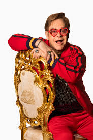
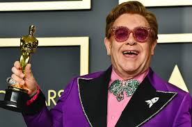

ELTON JOHN

Sir Elton Hercules John CH CBE (born Reginald Kenneth Dwight; 25 March 1947) is an English singer, songwriter, pianist, and composer. Collaborating with lyricist Bernie Taupin since 1967 on more than 30 albums, John has sold over 300 million records, making him one of the best-selling music artists of all time.
Born: 25 March 1947 (age 73 years), Pinner, United Kingdom
Spouse: David Furnish (m. 2014), David Furnish (m. 2005–2014), Renate Blauel (m. 1984–1988)
ALBUMS:
Empty Sky 1969,
Elton John 1970,
Tumbleweed Connection 1970,
Madman Across the Water,
Honky Château 1972,
Don't Shoot Me, I'm Only the Piano Player
1973,
Goodbye Yellow Brick Road
1973,
Caribou
1974,
Captain Fantastic and the Brown Dirt Cowboy
1975,
Rock of the Westies
1975,
Blue Moves
1976,
A Single Man
1978,
Victim of Love
1979

AWARDS:
Academy Award for Best Music (Original Song)
2020, 1995 ·
(I'm Gonna) Love Me Again, The Lion King, Can You Feel the Love Tonight
Golden Globe Award for Best Original Song
2020, 1995 ·
(I'm Gonna) Love Me Again, Can You Feel the Love Tonight
Kennedy Center Honors
2004
Grammy Hall of Fame
2012, 2003, 1998 ·
Elton John, Goodbye Yellow Brick Road, Your Song
Grammy Award for Best Musical Theater Album
2001
Elton John and Tim Rice's Aida
MTV Video Music Award for Best Choreography
1985 ·
Sad Songs (Say So Much)
Grammy Award for Best Pop Performance by a Duo or Group with Vocals
1987 ·
That's What Friends Are For
Juno Award for International Album of the Year
1976 ·
Elton John's Greatest Hits
Grammy Award for Best Male Pop Vocal Performance
1998, 1995 ·
Candle in the Wind '97, Can You Feel the Love Tonight
American Music Award for Favorite Album Pop/Rock
1995 ·
The Lion King
Tony Award for Best Original Score
2000 ·
Aida
Grammy Award for Best Instrumental Composition
1992 ·
Basque
NRJ Music Award for International Song of the Year
2004 ·
Sorry Seems to Be the Hardest Word
Billboard Music Award for Top Hot 100 Song
1997 ·
Candle in the Wind '97
Brit Award for British Male Solo Artist 1991
Laurence Olivier Mastercard Award for Best New Musical 2006 ·